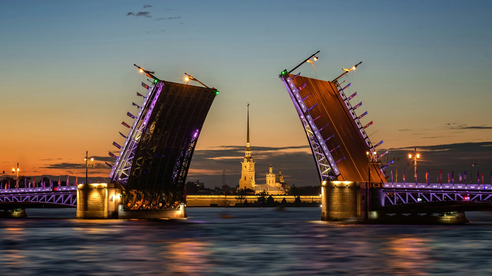

Питер
Экономика
Экономика Санкт-Петербурга — это вторая по масштабу экономика в России, которая опирается на многоотраслевую промышленность, крупный транспортный узел, торговлю и высокие технологии
-
Промышленность: Обрабатывающие производства, судостроение, автомобилестроение, фармацевтика и энергомашиностроение.

подробнее..
Энергетика и сырьевой сектор: В городе зарегистрированы штаб-квартиры крупнейших российских корпораций, включая ПАО «Газпром» и ПАО «Газпром нефть».
-
- Туризм и IT: Сфера услуг, гостиничный бизнес и информационные технологии играют значительную роль в формировании валового регионального продукта (ВРП).
Культура
Культура Санкт-Петербурга — это уникальный сплав строгого европейского классицизма, великого академического наследия и дерзкого современного андеграунда. Исторический центр города и его пригородные дворцово-парковые ансамбли официально признаны объектами Всемирного наследия ЮНЕСКО
- Классическое наследиеГосударственный Эрмитаж — один из крупнейших художественных музеев мира.Мариинский театр — главный символ российской оперной и балетной школы.Русский музей — богатейшее собрание национального изобразительного искусства.Александринский театр — старейший национальный драматический театр России.
-
Современные арт-пространстваСевкабель Порт — популярный прибрежный кластер с выставками и фестивалями.Новая Голландия — рукотворный остров с парком, ресторанами и лекториями.Лофт Проект ЭТАЖИ — пионер петербургского формата мультикультурных пространств.Пушкинская-10 — легендарный центр независимого и неофициального искусства.
Туризм
Туризм в Санкт-Петербурге действительно мощный: город стабильно в лидерах по посещаемости в России.
- Что привлекает туристов
Главная сила Петербурга — его культурно-историческое наследие. Здесь сосредоточено огромное количество музеев, памятников архитектуры, исторических мест. Я бы выделила несколько ключевых точек притяжения:
-
Государственный Эрмитаж. Один из крупнейших художественных музеев мира с коллекцией от античности до XX века.
Петропавловская крепость. Историческое ядро города: здесь находится Петропавловский собор (усыпальница российских императоров), можно прогуляться по стенам и подняться на колокольню.
gorbilet.ru +1
Исаакиевский собор. Впечатляет масштабом и роскошным интерьером с мозаиками, мрамором и позолотой. Обязательно стоит подняться на колоннаду — оттуда открывается панорама центра.
travel.yandex.ru +1
Спас на Крови. Узнаваем благодаря мозаичным фасадам и богатому внутреннему убранству.
kuda-spb.ru +1
Государственный Русский музей. Главный центр русского изобразительного искусства — от древних икон до авангарда.
Музей Фаберже. Здесь собрана крупнейшая в мире коллекция работ фирмы Карла Фаберже, включая императорские пасхальные яйца.
Летний сад. Регулярный парк со скульптурами, фонтанами и музейной атмосферой.
Разводные мосты. Одна из визитных карточек города: тысячи туристов собираются на набережных, чтобы увидеть световое шоу во время развода мостов.